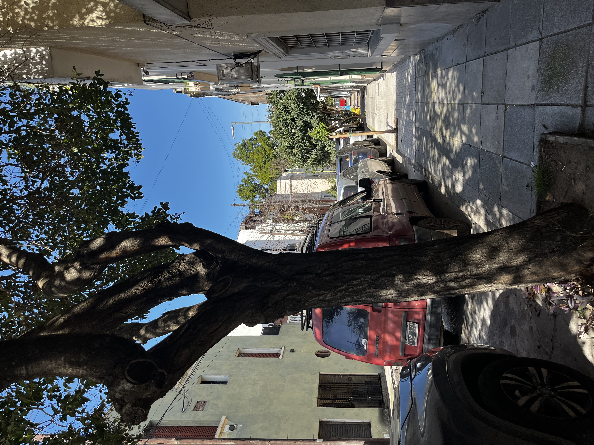

Las Mil Casitas - Conociendo el barrio Liniers
Las Mil Casitas es un historico y pintoresco conjunto residencial ubicado en el barrio de Liniers, cerca de la Avenida General Paz.
Construido a partir de 1922 bajo los lineamientos de la Comisión Nacional de Casas Baratas, este enclave nació como un proyecto habitacional obrero inspirado en la arquitectura del norte de Europa y los Países Bajos
Orígen e Historia
Impulso estatal: Surgió a partir de iniciativas legislativas impulsadas por el diputado Juan Cafferata para promover el acceso a la vivienda propia a los trabajadores, especialmente a los obreros de los talleres ferroviarios de la zona.
Diseño urbano: Presenta un trazado en forma de pasajes y manzanas estrechas con viviendas gemelas.
Características de las Viviendas
Dimensiones: Edificios compactos levantados sobre lotes cuadrados de aproximadamente 8,66 por 8,66 metros.
Estructura: Casas económicas de dos plantas con techos a dos aguas, aberturas altas y alargadas, y pequeños jardines o patios frontales.
Actualidad: Aunque muchas propiedades han sido remodeladas o modernizadas por sus vecinos con el paso de los años, el barrio conserva un marcado perfil residencial, tranquilo y de fuerte identidad patrimonial en el oeste de la Ciudad de Buenos Aires
Pasaje Amalia


Para conocer más sobre este proyecto, visita el README en GitHub.